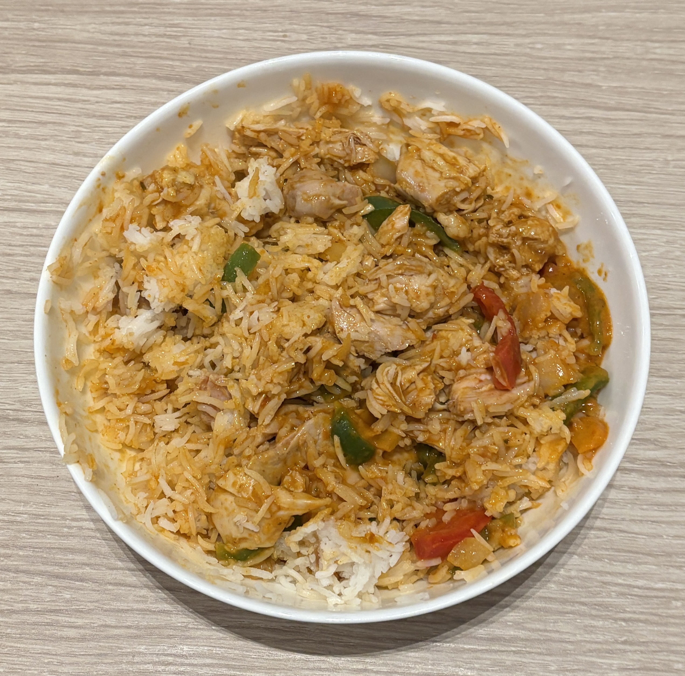

Home
Butter Chicken

Ingredients
- 3/4 lb Chicken Breast cubed
- Basmati rice
- 30g (2 spoonfuls) plain yogurt
- 28g (2 spoonfuls) butter
- salt
- cooking spray
- sugar, optional
- 45g low-fat evaporated
- 6g chili powder
- 2g cumin
- 4g garam masala
- 1g tumeric powder
- 3 cloves garlic
- minced ginger
- 1/2 lime of lime juice
- 400g chopped tomatoes
- 1/4 onion diced
- cilantro
- 15g peanut butter
- water
Steps
- Marinate the chicken: After chopping the chicken breast into cubes, add them to a bowl with the chili powder, ground cumin, garam masala powder, salt, crushed garlic, ginger, lime, and yogurt. Mix to combine and set aside for 15 minutes to let marinate
- Sear the chicken: When ready to cook, set a cast iron or nonstick pan on medium-high heat. Sear chicken pieces until browned and barely cooked through. Since this is a lower-calorie recipe, rely on the pan and yogurt marinade for browning. If you're worried about sticking, you can use a bit of baking spray. Remove the browned chicken pieces from the pan and set aside. These will finish cooking in the gravy later.
- Start the gravy: Set a fresh pan over medium heat. Once hot, apply a light amount of baking spray then add the onions and saute for 2-3 minutes.Add the tomatoes, peanut butter, garlic, ginger, garam masala, chili powder, a small pinch of salt, and a sprinkle of turmeric. Let it simmer for 10 minutes, stirring occasionally.Add some water to thin the mixture, enough to blend well in the next step (about a cup). Stir to combine.
- Blend and simmer: Pour the sauce into a food processor or blender and pulse until completely smooth. Over the pan, pour and push the sauce through a metal strainer back to the pan. Turn the heat on medium. Add the butter, evaporated milk, and cooked chicken. Stir the sauce and let simmer until it thickens to your liking, usually about 6-10 minutes.
- Finish and serve: Turn off the heat. Taste and adjust as needed with salt, sugar, spices, or a bit more butter for texture. Serve the butter chicken with rice, naan, or vegetables. Garnish with cilantro.